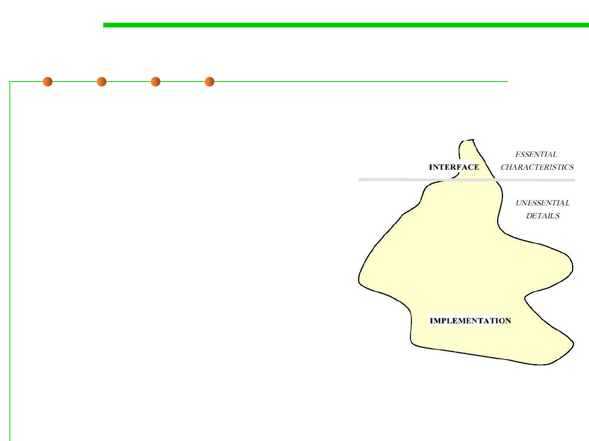

6.1 Metrics and Construction Principles for Maintainability
5. Information Hiding
▪ Motivation: design decisions that are subject to change should be
hidden behind abstract interfaces (经常可能发生变化的设计决策应
尽可能隐藏在抽象接口后面)
– Impact on Continuity
较少发生变化的部分
(影响“可持续性”)
需要经常发生变化的部分
▪ The designer of every module must
select a subset of the module’s
properties as the official information
about the module, to be made
available to client modules.